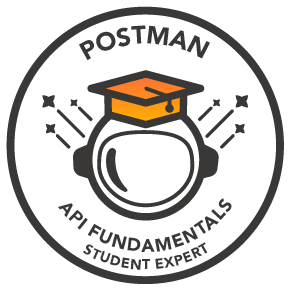
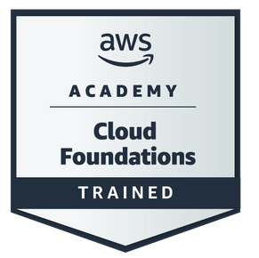

About me
I'm Shivam Thorat, a backend developer specializing in Java Spring Boot, MySQL, and cloud-native architectures. Through my internship experience at UpscaleEra, I've built and deployed scalable, production-ready backend systems, designing secure REST APIs, optimizing database queries, and collaborating with cross-functional teams to ship reliable software.
What sets me apart is the intersection of backend engineering and cybersecurity. I don't just build APIs, I build secure ones. From applying OWASP Top 10 principles and input validation to implementing encryption, JWT-based authentication, and log-based threat detection, security is baked into every layer of what I build. My goal is to engineer systems that are not only performant and scalable, but resilient and trustworthy by design.
Achievements & Certifications
-

TryHackMe Profile
Cybersecurity Learning Platform
View Profile ↗ -

OWASP Top 10
Web Application Security Risks
-
GitHub Foundations
Issued by GitHub
Verify ↗ -

Postman API Fundamentals
Issued by Postman
Verify ↗ -

Oracle Cloud Infrastructure 2025
Issued by Oracle
Verify ↗ -

AWS Cloud Foundations
Issued by AWS
Verify ↗
What i'm doing
-

Cybersecurity Solutions
Building innovative security tools , from notification bypass scanners to secure QR code analysis , to detect malicious activity and improve digital safety for users.
-

Backend Development
Leveraging Java Spring Boot and MySQL to create robust, scalable, and high-performance backend systems and RESTful APIs.
-

Application Development
Developing user-friendly applications like a budgeting tracker and Pocket Doctor to solve real-world problems with clean, maintainable code.
-

Monitoring & Log Analysis
Analyzing logs and system events to detect, hunt, and prevent attack patterns and security threats through effective monitoring mechanisms.
-
AI Tools & Productivity
Leveraging AI tools like ChatGPT, GitHub Copilot, Gemini, and Cursor to accelerate development, automate workflows, write better code, and stay productive , blending human expertise with intelligent assistance.
Let's Connect
I'm always open to collaborating on interesting backend projects, cybersecurity research, or discussing new opportunities. Reach out , let's build something great together.